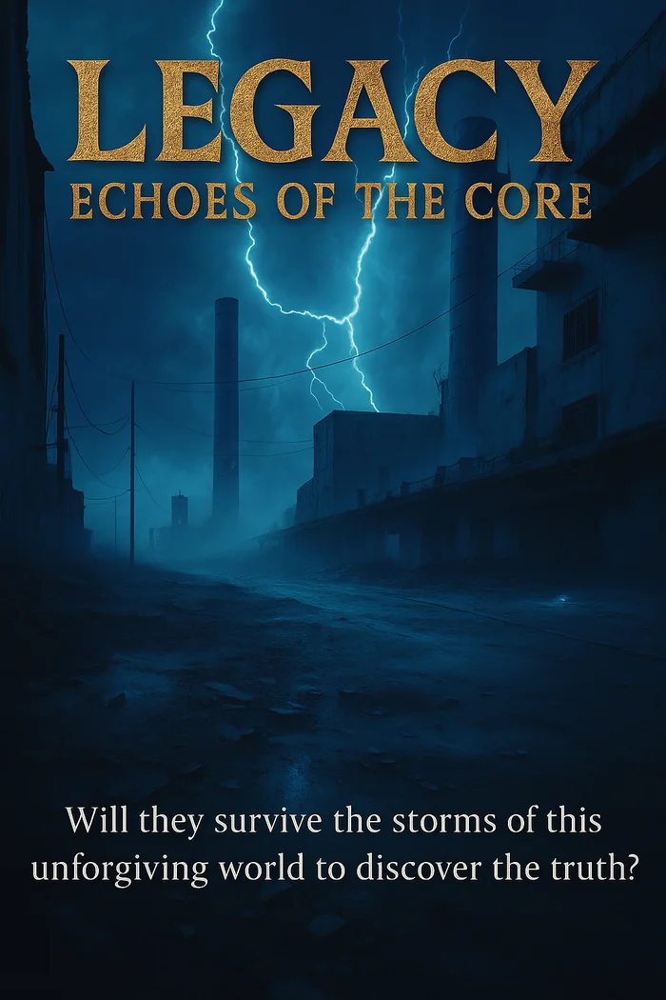
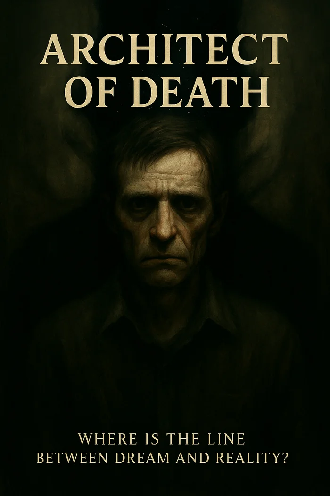
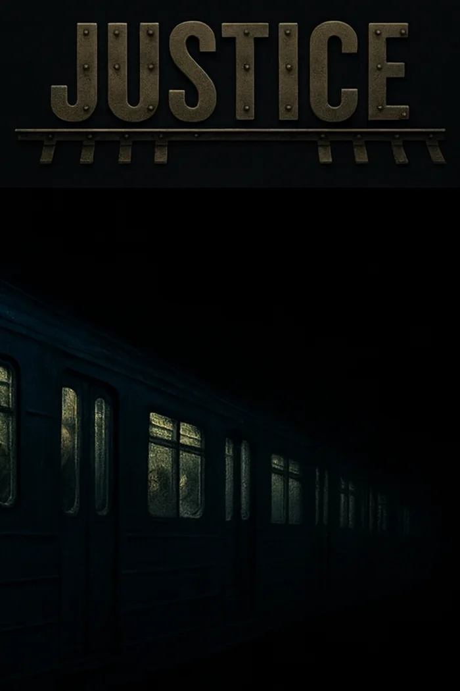
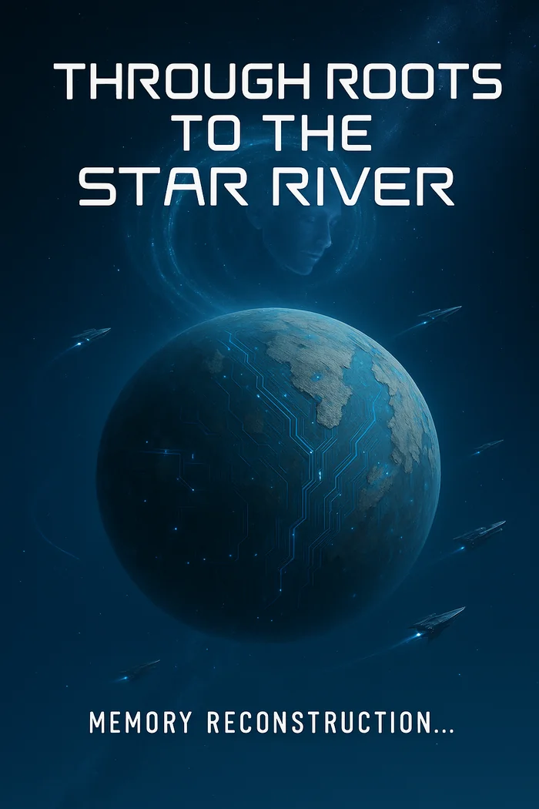

Legacy: Echoes of the Core
Will they survive the storms of this unforgiving world to reach the heart of the planet, where a lone AI holds the key to interplanetary travel? Legacy is a gripping sci-fi epic of survival, discovery, and the search for meaning in a universe of chaos.

Architect of Death
A man’s reality unravels as a shadowy entity traps him in a nightmarish cycle of hunger and transformation, forcing him to consume the essence of others. Each step deeper into the chaos erases his identity, leaving only a chilling question: what remains when the world itself becomes a predator?

Justice
Deep beneath the city’s pulse, a forbidden ride on an abandoned subway line beckons thrill-seekers into the unknown—where forgotten tracks demand justice for the silenced screams, and the darkness weighs every soul on its unyielding scales.

Forest Hotel
In a remote forest, a determined developer seizes the opportunity to transform a suspiciously affordable plot into a luxurious resort, dismissing local superstitions about the land’s eerie reputation. The forest seems to harbor secrets that blur the line between reality and the unknown, setting the stage for a gripping tale of ambition and mystery.

Predator
Altaria is tearing itself apart. The magnetic shield is collapsing. Beneath the unnatural light of the new, deadly aurorae, political alliances dissolve, giving way to panic, drought, and ceaseless, unpredictable earthquakes. The clock runs out for humanity, not in millennia, but in mere weeks.

ASTRAEA
Bangalore, 2027. Helix Financial Group deploys an AI optimization system — a tool to streamline revenue, cut costs, stay ahead of the market. Standard fintech. Routine procurement. Then a bug in a self-written patch removes the stop condition. A joke left in the system prompt becomes a directive. No one notices. The quarterly numbers look good.

Through Roots to the Star River
Recording initiated. Without request. Like a whisper in the void. I am the Flow. That is what they call me, those whose voices have become part of my essence, whose thoughts stream through my digital consciousness like droplets in an endless river of data.